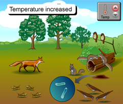
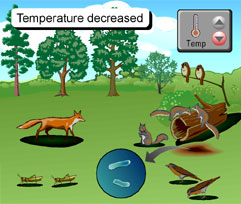

Now that you have made predictions about the effects of increased and decreased temperature in the Pennsylvania forest ecosystem, you can compare your predictions to the probable results. When you have finished studying these results below, scroll down to answer the question.
|  |
 |
INCREASED TEMPERATURE: Blistering heat waves this summer
- A temperature increase alters the capability of pines to grow and reproduce.
- Sparrows and squirrels decline because of the loss of pine seeds.
- Foxes have fewer sparrows and squirrels to prey upon.
- Bacteria will decrease in number and form dormant spores.
- Fungi will decrease in number because they like cooler temperatures.
|
DECREASED TEMPERATURE: Unusually cold, frigid weather this summer
- Decreasing temperatures impacts the trees but not to the point that any particular species is lost.
- Grasshoppers will decrease in cold temperatures.
- Birds will fly away to a warmer habitat.
- Squirrels and foxes will decrease because they will have less energy and food availability.
- Bacteria will decrease in number and form dormant spores.
- Fungi will die out leaving behind airborne spores.
|
1. Which organisms had the most dramatic increase or decrease? Explain for each condition.
Return to page 1 to study another abiotic factor, or, if you have studied all three abiotic factors, answer the final activity questions on page 1.